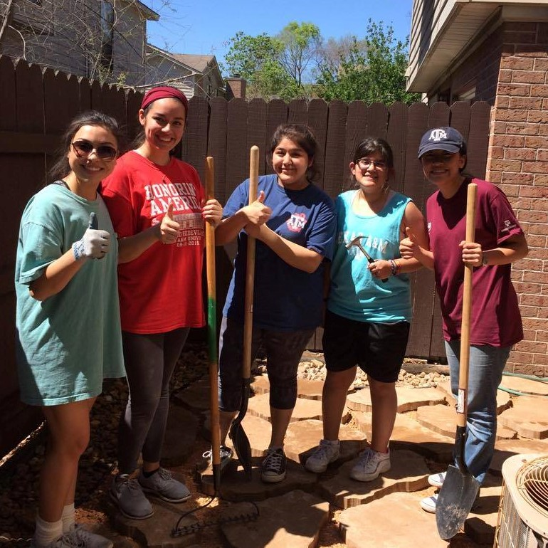
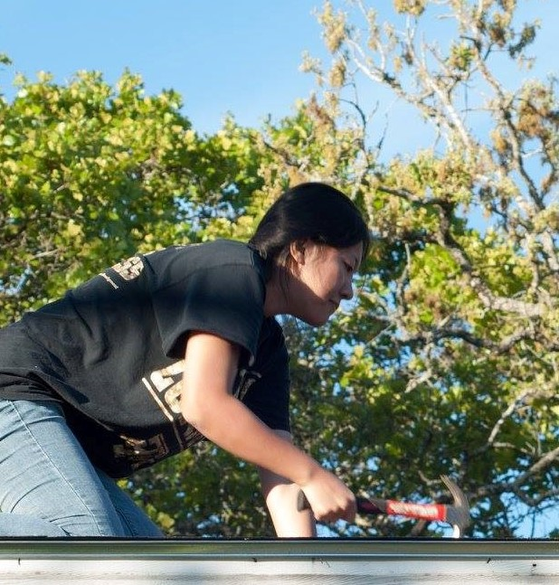
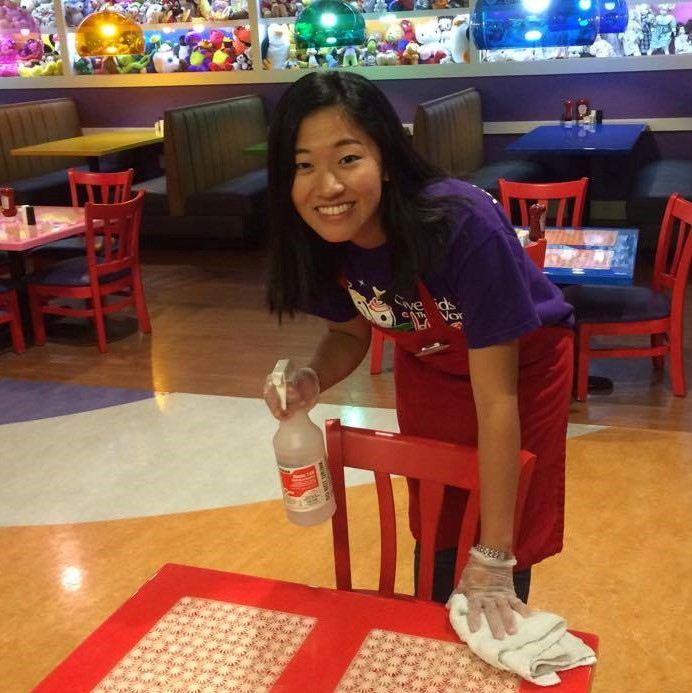
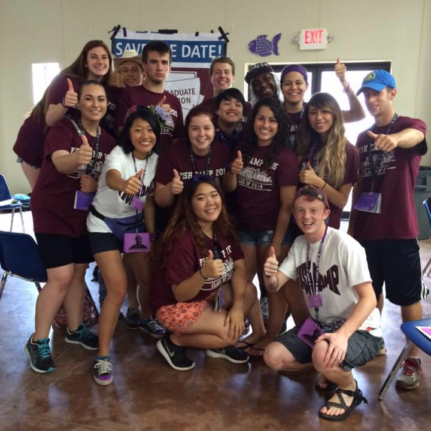
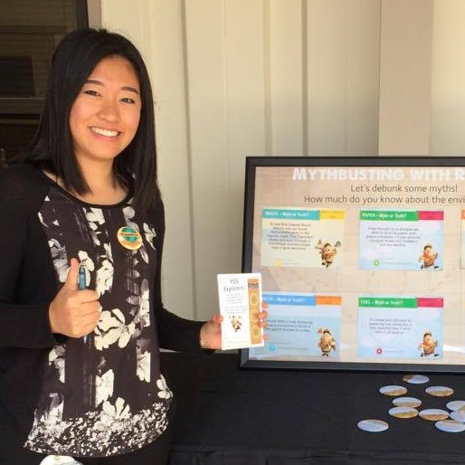

Jiayao Amy Li, EIT
Activities





New York Cares
Team Leader, Volunteer
Provided support for those in need in various volunteering projects of the city
Seeking Every Opportunity Scholars
Mentor
Mentored underprivileged high school students biweekly to help them navigate the college admissions process
Memorial Student Center Bethancourt
Internal Development Director
Engaged in cross-discipline and hands-on learning experiences through professional development programs
Give Kids the World Village
Volunteer
Provided service to children with life-threatening illness and their families
Fish Camp
Counselor
Cooperated with 25 other counselors to mentor over 150 freshmen to help them transition to college
Aggies Reaching Out
Counselor
Mentored groups of 7-10 underrepresented 8th graders in order to inspire them to pursue higher education
Memorial Student Center LEAD
Spencer Leadership Conference Committee
Aggies Invent
Engineering Innovation Center
1st Place in competition against 7 teams